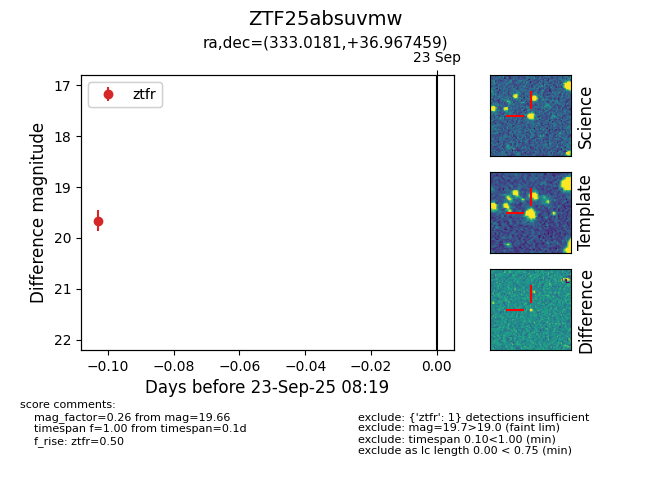

FINK: ZTF25absuvmw
Lasair: ZTF25absuvmw
ALeRCE: ZTF25absuvmw
ZTF25absuvmw (ztf,fink)
equatorial (ra, dec) = (333.0181,+36.96746)
galactic (l, b) = (90.7983,-15.76967)

last ztfr=19.66
1 ztfr detections